PillBell — Bedienungsanleitung
Die Medikamenten-Erinnerung, die wirklich klingelt.
Erster Start
Beim ersten Öffnen bittet Sie ein kurzer Assistent um einige Berechtigungen. Jede davon dient nur einem Zweck — damit die Erinnerung wirklich klingelt. PillBell hat keinen Internetzugang und sammelt nichts:
- Benachrichtigungen — ohne sie kann keine Erinnerung erscheinen.
- Wecker & Erinnerungen — damit PillBell auf die Minute genau klingelt.
- Vollbild-Erinnerungen — der Alarm darf den ganzen Bildschirm aufwecken, wie ein Wecker.
- Akku / Hintergrund — damit das Telefon PillBell nicht schlafen legt. Der Assistent zeigt die Schritte genau für Ihre Telefonmarke (Samsung, Xiaomi u. a. unterscheiden sich).
- „Nicht stören“-Zugriff — die Erinnerung kommt auch bei aktiviertem „Nicht stören“ durch.
- Widget auf dem Startbildschirm — der letzte Schritt bietet an, das PillBell-Widget hinzuzufügen; Sie können ihn überspringen und es später nachholen.
Medikament hinzufügen
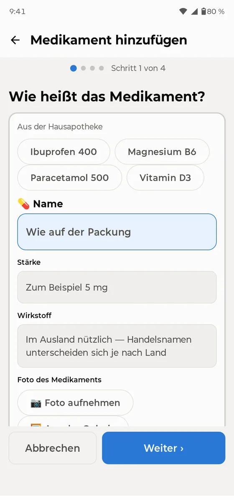
Gehen Sie zu Medikamente → Medikament hinzufügen. Ein Assistent in vier Schritten fragt nach Name, Form und Stärke, Zeitplan, Menge pro Dosis und zeigt eine Zusammenfassung. Sie können auch ein Foto der Packung hinzufügen, damit Sie immer wissen, wonach Sie greifen.
PillBell beherrscht alle üblichen Zeitpläne: feste Uhrzeiten am Tag (ohne Begrenzung), mehrmals täglich, alle N Stunden, alle N Tage, bestimmte Wochentage, Zyklen wie 21 Tage / 7 Tage Pause, wöchentliche und monatliche Medikamente, jeden zweiten Tag sowie halbe und variable Dosen („1 bis 2 Tabletten“).
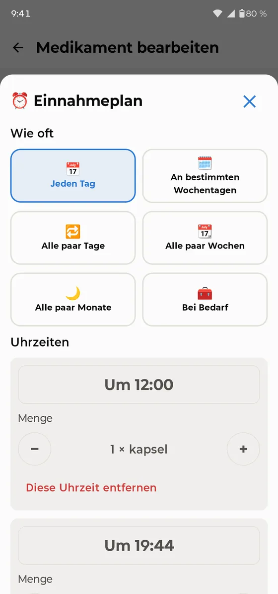
Der Heute-Bildschirm
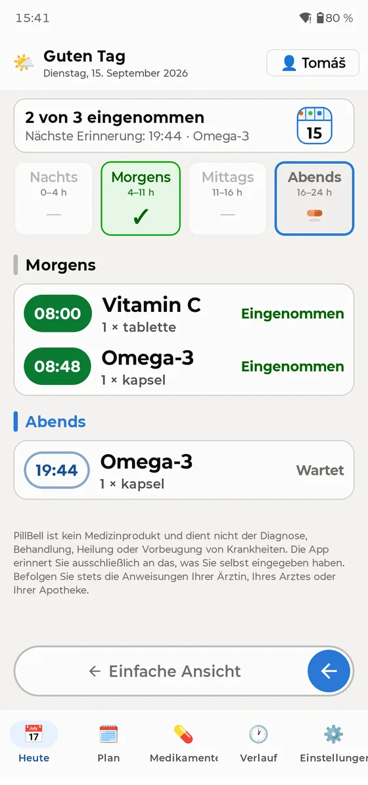
Heute funktioniert wie ein Tablettendosierer: vier Fächer — Nacht, Morgen, Mittag, Abend. Ein grünes ✓ heißt „erledigt“; Tablettensymbole zeigen, was noch wartet.
- Sie sehen den ganzen Tag auf einmal, aufgeteilt in Nacht, Morgen, Mittag und Abend. Ein Tippen auf ein Fach scrollt die Liste dorthin.
- Tippen Sie auf eine Dosis, um sie zu bestätigen oder zu korrigieren: Eingenommen, Zu anderer Zeit eingenommen, Ausgelassen oder zurück auf Nicht eingenommen.
- Eine Dosis lässt sich jederzeit am Tag bestätigen. Mehr als 30 Minuten zu früh wird ehrlich als „Früher eingenommen“ vermerkt.
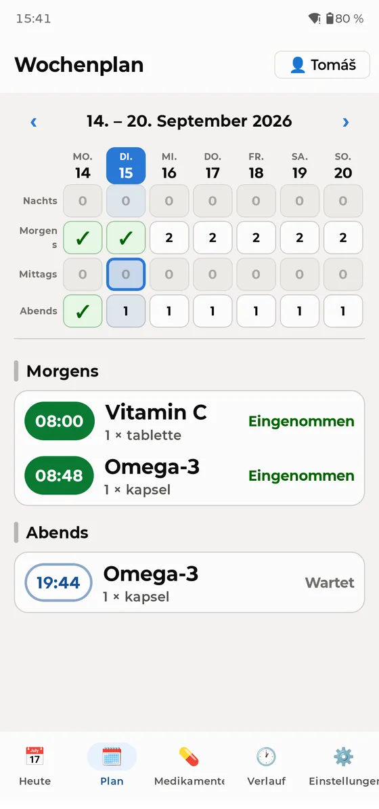
Der Tab Plan zeigt die ganze Woche als Tablettenbox: Spalten sind Tage, Zeilen Tagesabschnitte. Ein grünes ✓ heißt geleert, eine Zahl sagt, wie viele Dosen warten, eine Null heißt nichts. Tippen Sie einen Tag an, um seinen Plan zu öffnen; wischen Sie zur nächsten Woche.
Wenn es klingelt
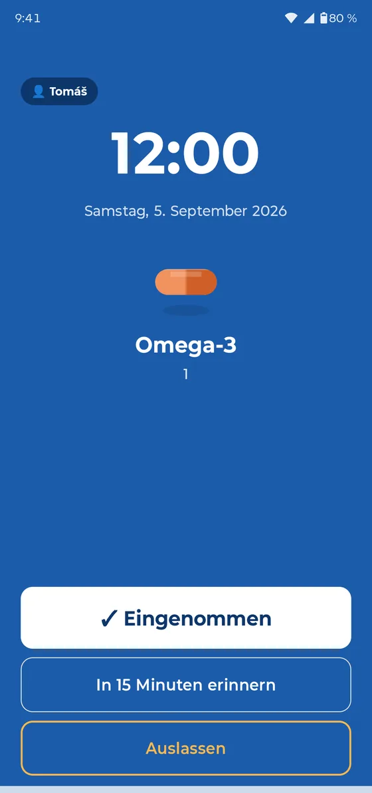
Zur geplanten Minute klingelt PillBell wie ein Wecker — im Vollbild, auch bei gesperrtem Telefon, und es klingelt weiter, bis Sie reagieren. Auch „Nicht stören“ hält es nicht auf.
- ✓ Eingenommen — bestätigt die Dosis und beendet den Alarm.
- In 15 Minuten erinnern — verschiebt; die App zeigt dann überall „Verschoben bis HH:MM“.
- Auslassen — vermerkt die Dosis als bewusst ausgelassen.
Reagiert niemand, wiederholt sich die Erinnerung nach einer Weile. Auf dem Sperrbildschirm werden Medikamentennamen standardmäßig verborgen (Privatsphäre) — in den Einstellungen können Sie sie erlauben, wenn Sie allein wohnen.
Einfacher Modus
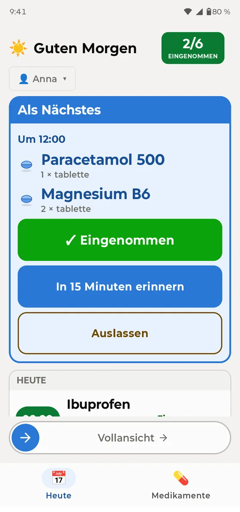
Für alle, denen Telefone schwerfallen: Einstellungen → Anzeige → Vereinfacht. Die ganze App wird zu einer großen Karte — was als Nächstes dran ist und eine große Taste „✓ Eingenommen“. Zurück geht es mit dem Schieberegler „Vollansicht“ unten.
Familienprofile
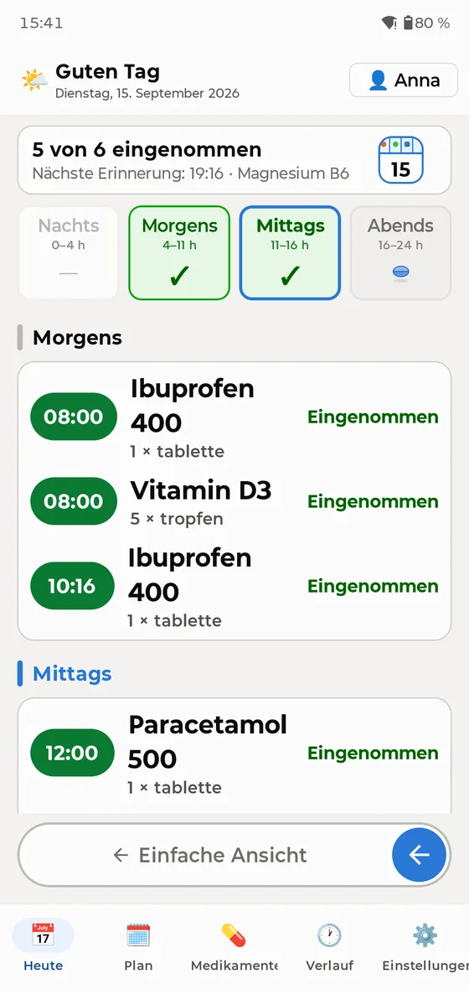
Ein Telefon kann den ganzen Haushalt erinnern. Personen fügen Sie unter Einstellungen → Personen hinzu. Zwischen ihnen wechseln Sie mit der Namens-Taste oben rechts auf Heute — sie zeigt auch, wer noch Dosen offen hat. Erinnerungen sagen, für wen sie sind („Anna: 2 Medikamente“).
Widgets
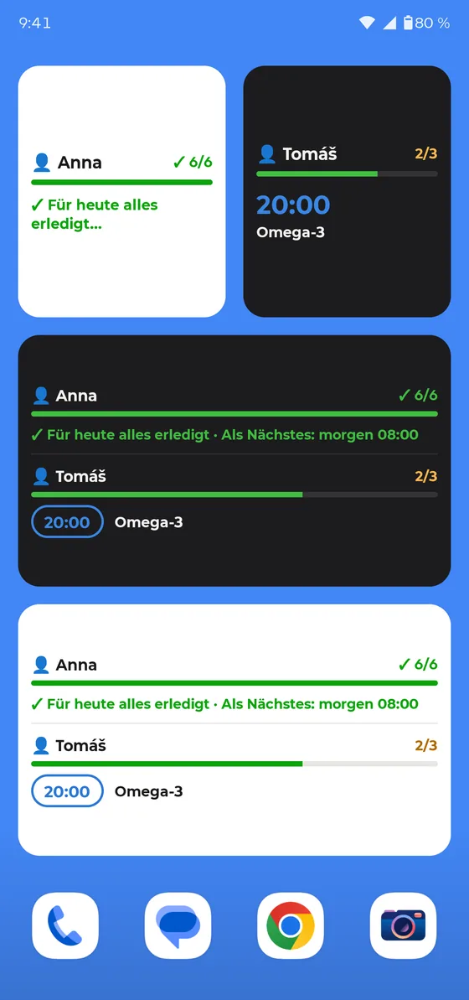
Halten Sie eine freie Stelle des Startbildschirms gedrückt → Widgets → PillBell. Es gibt zwei Arten, jede in Hell und Dunkel:
- Tagesübersicht — der ganze Haushalt: Fortschritt, nächste Uhrzeit und fällige Medikamente.
- Personen-Widget (klein) — beim Hinzufügen wählen Sie, wessen Medikamente es zeigt. Zwei nebeneinander: „Anna“ und „Thomas“.
Seit Version 1.0.1 hat das Widget einen Ring: Er zeigt, wie viele der heutigen Dosen eingenommen sind (zum Beispiel 4/6). Ein grüner Ring mit Haken heißt für heute erledigt, ein roter heißt, eine Dosis ist überfällig. Hat heute nur eine Person Dosen, füllt ein großer Ring das ganze Widget.
Verlauf & Arzt-PDF
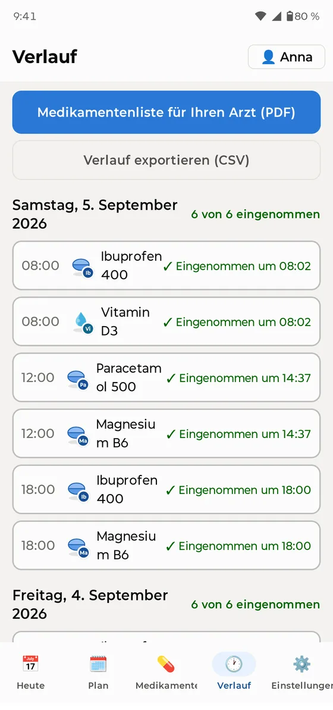
Der Verlauf bewahrt die letzten 30 Tage. Ein Tipp erzeugt eine PDF-Medikamentenliste für Ihren Arzt — Medikamente, Dosen und wie regelmäßig Sie sie eingenommen haben. Alles lässt sich auch als CSV exportieren, ältere Einträge können korrigiert werden.
Hausapotheke & Vorräte
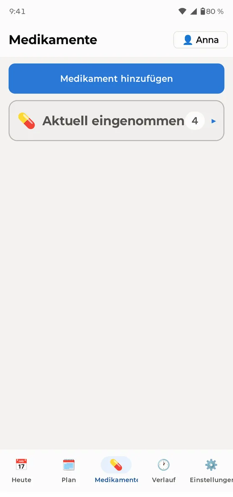
Medikamente „bei Bedarf“ (Schmerzmittel, Tropfen …) wohnen in der Hausapotheke — ohne Zeitplan, Sie tragen sie ein, wenn Sie sie nehmen. Bei regelmäßigen Medikamenten können Sie Vorräte verfolgen: PillBell zählt mit und warnt rechtzeitig, bevor sie ausgehen.
Sicherungen — bitte lesen
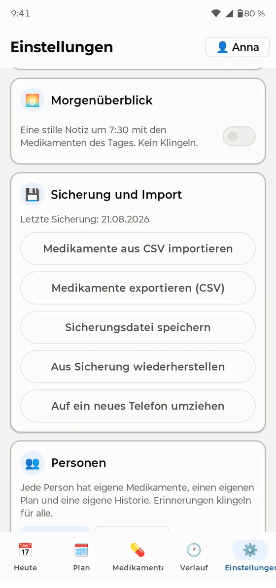
Gehen Sie zu Einstellungen → Sicherung und exportieren Sie eine Sicherung (eine einzige Datei inklusive Medikamentenfotos). Bewahren Sie sie auf, wo Sie möchten — per E-Mail an sich selbst, in einer Cloud, auf dem Computer. Umzug auf ein neues Telefon: PillBell installieren, Sicherung wiederherstellen, fertig — alle Erinnerungen stellen sich automatisch wieder ein. PillBell erinnert etwa einmal im Monat sanft an die Sicherung.
Zuverlässige Erinnerungen
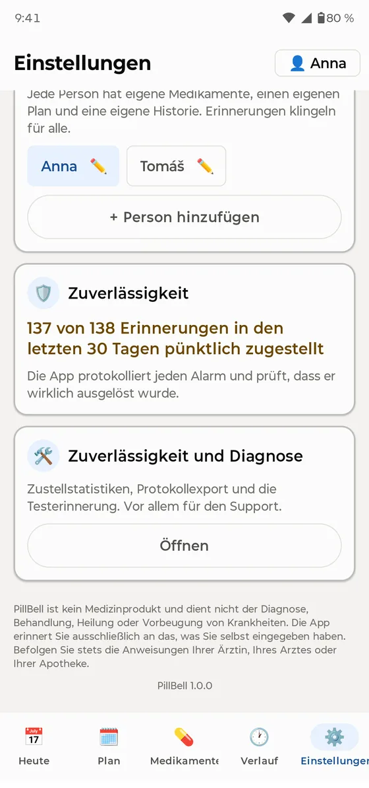
- Schließen Sie den Akku-Schritt im Assistenten ab (auch in den Einstellungen zu finden). Telefonhersteller legen Apps gern schlafen, um Akku zu sparen — der häufigste Grund, warum Erinnerungs-Apps „verstummen“.
- Niemals die App erzwungen beenden.
- Samsung: PillBell aus den „Inaktiven Apps“ heraushalten. Xiaomi: „Autostart“ erlauben. Die App führt Sie zum richtigen Bildschirm.
- Prüfen Sie Einstellungen → Zuverlässigkeit — PillBell protokolliert jeden Alarm und zeigt ehrlich, wie viele in den letzten 30 Tagen pünktlich geklingelt haben.
Häufige Fragen
Eine Erinnerung hat nicht geklingelt. Was nun? Öffnen Sie Einstellungen → Zuverlässigkeit und den Akku-Assistenten. In 9 von 10 Fällen hat der Energiesparmodus die App stummgeschaltet — der Assistent behebt das. Prüfen Sie auch, dass die App nicht erzwungen beendet wurde.
Funktioniert es mit „Nicht stören“? Ja, wenn Sie beim Einrichten den Zugriff erlaubt haben.
Was ist mit Reisen und Zeitzonen? Ihr Zeitplan bleibt an der Heimatzeit verankert — Dosisabstände verschieben sich beim Fliegen nie.
Kann ich die App sperren? Ja — Einstellungen → App-Sperre (Fingerabdruck/PIN). Der klingelnde Alarm und „Eingenommen“ funktionieren immer auch ohne Entsperren.
Welche Sprachen? Deutsch, Englisch, Tschechisch, Französisch, Spanisch, Italienisch, Polnisch, Niederländisch, Portugiesisch und Ukrainisch.
Etwas fehlt oder funktioniert nicht — wie sage ich Bescheid? Einstellungen → Gefällt Ihnen PillBell? → Dem Entwickler schreiben. Es öffnet sich eine E-Mail mit App-Version und Telefonmodell (nichts über Ihre Medikamente). Dort finden Sie auch Bei Google Play bewerten und Weiterempfehlen.

PillBell is made by Tomelo Apps.
Support: support@tomelo.app · Datenschutzerklärung
PillBell ist kein Medizinprodukt und dient nicht der Diagnose, Behandlung, Heilung oder Vorbeugung von Krankheiten. Befolgen Sie stets die Anweisungen Ihrer Ärztin, Ihres Arztes oder Ihrer Apotheke.